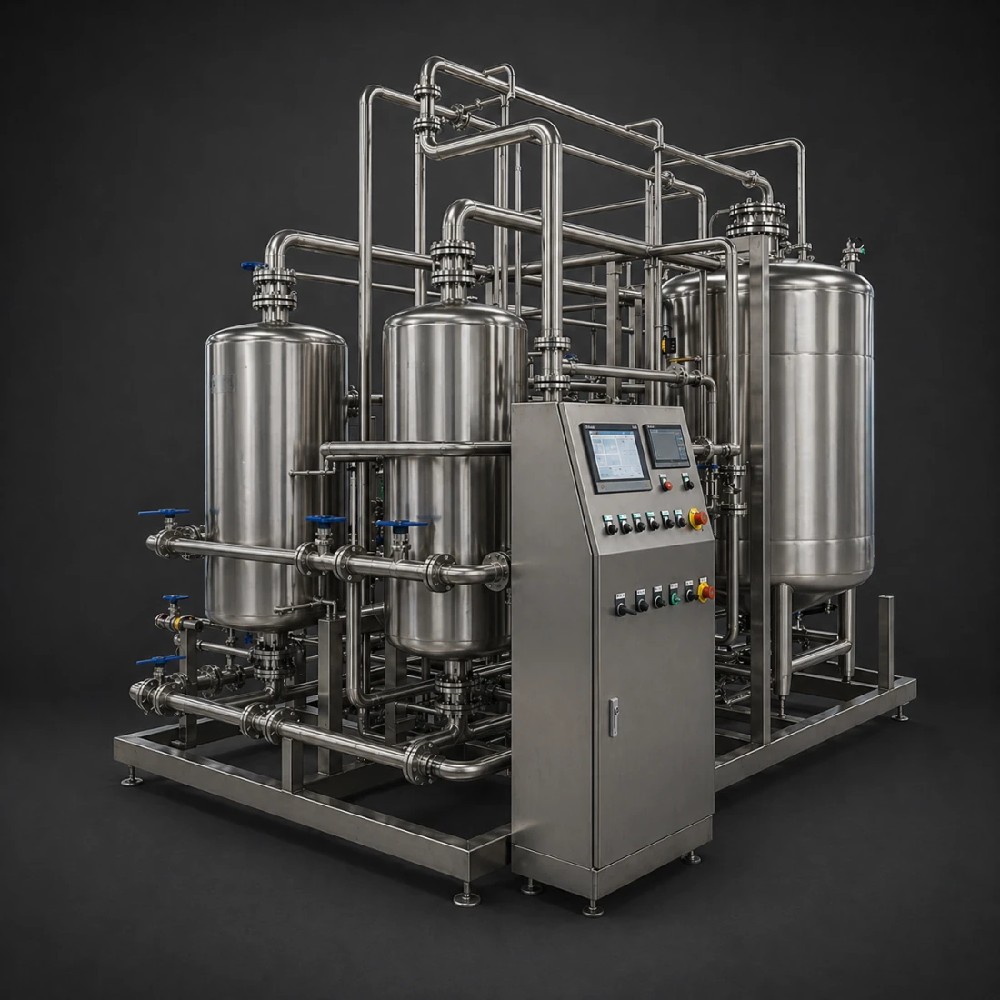

Water filtration
Reverse Osmosis
Reverse osmosis (RO) systems deliver consistent, high-purity water by removing dissolved salts, organic compounds, microorganisms and colloidal particles through high-pressure membrane separation. Integrated within a multi-stage treatment train, RO forms the core purification step following pre-treatment and upstream filtration, producing low-conductivity water suitable for demanding process applications.
In beverage production, RO enables full control over water composition, eliminating variability from raw supply and allowing precise mineral adjustment downstream. Combined with options such as EDI polishing, UV or ozone sterilisation, and automated control systems, it ensures stable water quality, reduced contamination risk, and repeatable process performance across brewing, blending and utility applications.
Controlled Water Quality in Beverage Production
Consistent Input for Process Control
RO removes the majority of dissolved ions and impurities, creating a stable baseline water profile. This eliminates variability from raw water sources and allows precise downstream mineralisation, ensuring repeatable mash chemistry, fermentation performance, and final product consistency batch after batch.
High-Purity Filtration with Low Conductivity Output
Using semi-permeable membrane technology under pressure, RO achieves deep removal of salts, organics and contaminants. The result is low-conductivity water with minimal impurity load, suitable for sensitive applications where water quality directly impacts flavour, clarity and microbiological stability.
Scalable Treatment Architecture
RO systems are designed as part of a modular treatment train, including pre-treatment, membrane filtration, and optional polishing or sterilisation stages. This enables flexible configuration to site conditions, simplifies maintenance, and ensures reliable operation across varying production volumes and water qualities.
| Parameter | Value | Unit / notes |
|---|---|---|
| Purification Technology | Reverse Osmosis (RO), optional EDI polishing | Membrane separation + optional electrodeionisation |
| Salt / Contaminant Rejection | 95–99% | Dissolved salts, organics, microorganisms |
| System Configuration | 2-stage RO (double pass) | Improves purity and reduces conductivity |
| Output Conductivity | ≤1.3 | µS/cm @ 25°C (pharma reference standard) |
| TOC (Total Organic Carbon) | ≤500 | ppb (µg/L) |
| Microbial Limit | ≤100 | CFU/mL |
| Nitrates | ≤0.2 | ppm |
| Heavy Metals (as Pb) | ≤0.1 | ppm |
| Recovery Rate | System dependent | Typically optimised for efficiency vs. reject |
| Membrane Type | Thin-film composite (TFC) | Industry standard high-rejection membranes |
| Feed Pressure | High-pressure operation | Driven by booster pump |
| Pre-treatment | Multi-media, carbon, softener, security filter | Protects membranes |
| Post-treatment | UV / ozone, storage, distribution | Final sterilisation + delivery |
| Optional Modules | EDI, membrane degasser, storage tank | For ultrapure applications |
| Automation | PLC / integrated control system | Continuous monitoring & operation |
| Applications | Beverage, pharma, electronics, lab | High-purity process water |
CONTACT US
Request a quote
Send us your details and we'll be in touch to walk you through configurations, pricing and lead time.